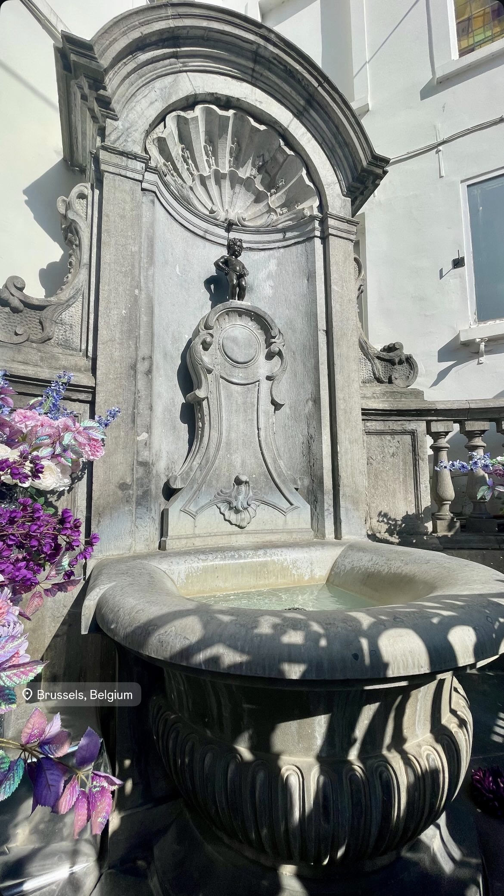
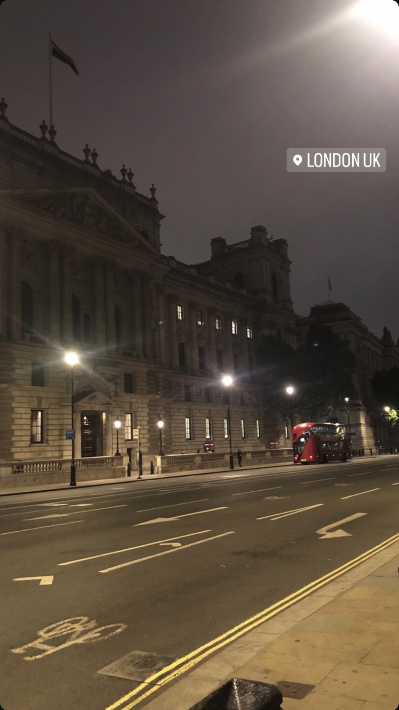
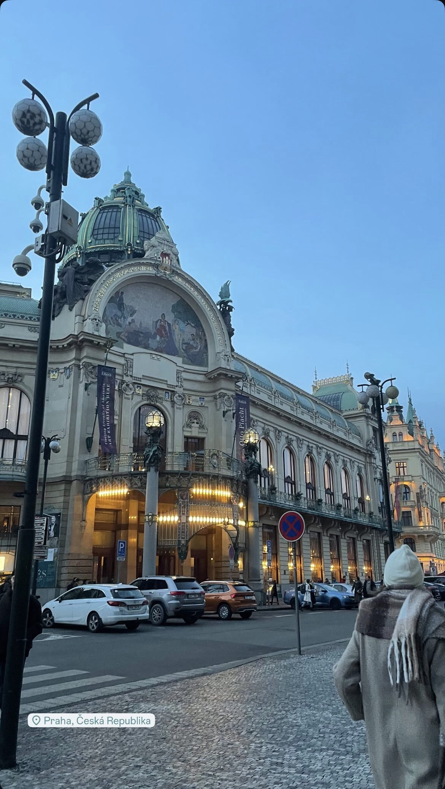

J'aime voyager, découvrir de nouvelles cultures et langues étrangères. J'ai eu l'occasion de visiter plus 7 pays en Europe . Ces voyages me permettent de voir d'autres traditionssssss. Aussi, pendant mes 3 années de lycée, j'ai pu apprendre une nouvelle langue : le chinois. Je n'ai pas seulement appris à parler et écrire une langue, j'ai aussi appris l'histoire d'un autre pays, les coutumes. J'ai eu aussi l'occasion de partir en voyage scolaire en Chine.



Voyager, c'est ma façon de m'ouvrir au monde. J'ai eu l'occasion de découvrir plus de 7 pays en Europe — chaque destination m'a apporté une nouvelle façon de voir les choses, les gens, les traditions.
Appris pendant 3 ans au lycée, avec un voyage scolaire en Chine — immersion dans la culture, l'histoire et les traditions.
Appris pendant 3 ans au lycée, avec un voyage scolaire en Chine — immersion dans la culture, l'histoire et les traditions.
Appris pendant 3 ans au lycée, avec un voyage scolaire en Chine — immersion dans la culture, l'histoire et les traditions.